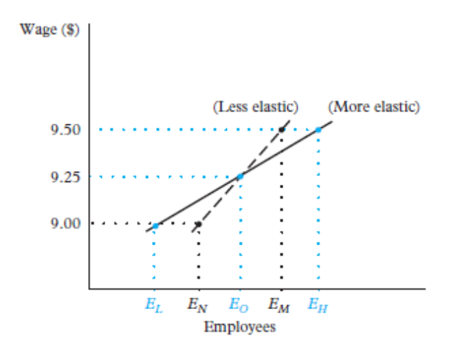
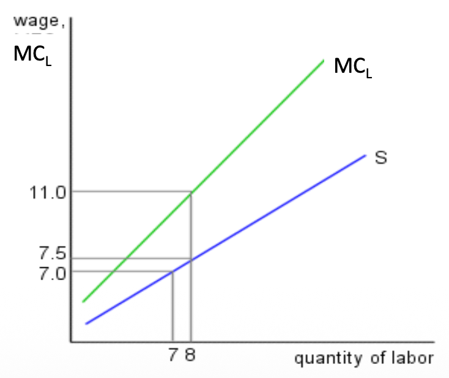
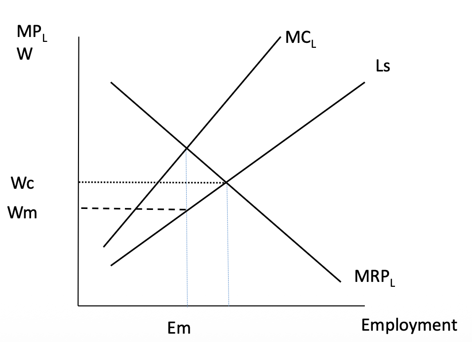
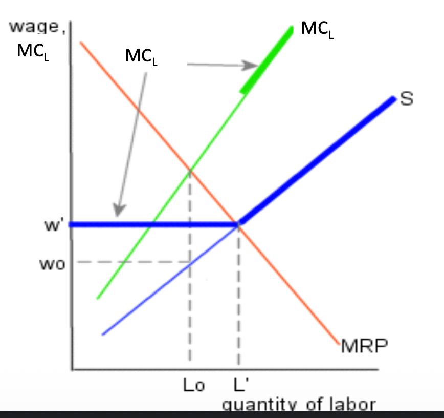
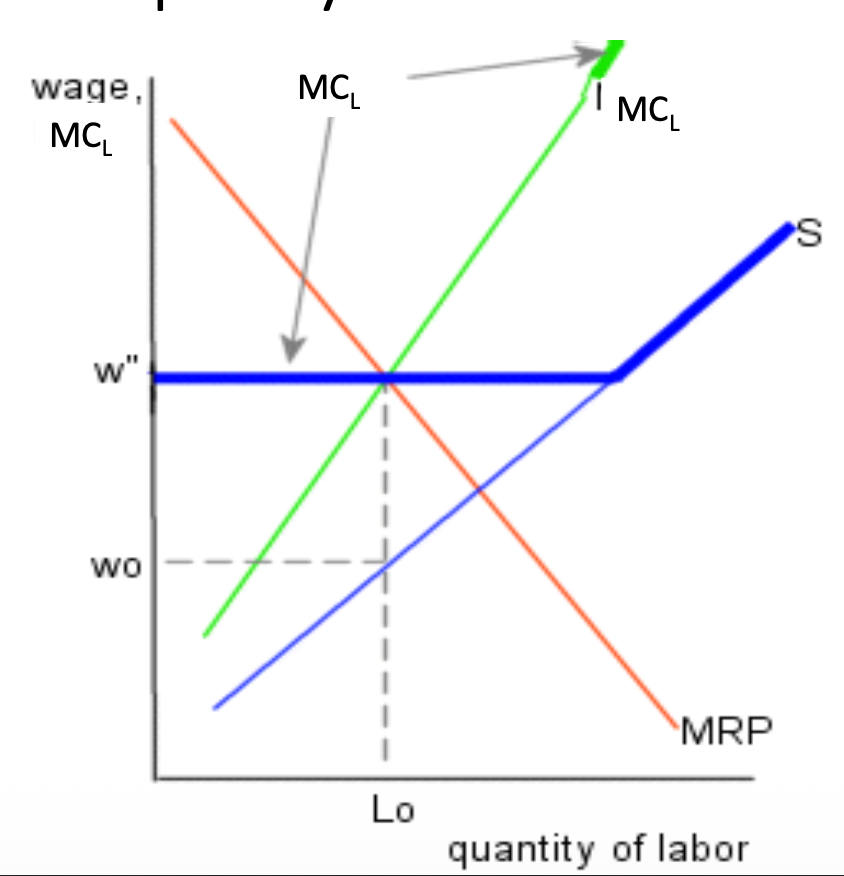
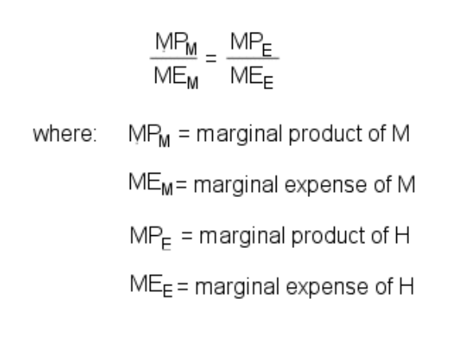

Labour Market Frictions
🏃 I. Frictions on the Employee Side
In a perfectly competitive market, the Law of One Price prevails: workers with strictly identical skills in the same occupation should all receive exactly the same wage, because they are assumed to be perfectly mobile (Perfect Mobility). If they found a better offer elsewhere, they would move instantly.
However, in reality, this assumption of perfect mobility is broken. This is what we call Frictions. Changing jobs costs time, money, and energy, which violates the "Law of One Price". A direct consequence: the labor supply curve faced by a firm is no longer perfectly horizontal, but becomes upward-sloping.
1. Costly Mobility & Job Search Costs (Coûts de Recherche)
Job Search Costs
Finding the "right" job takes time. This simple fact has major economic consequences:
- Frictional Unemployment: These search costs explain why unemployment exists even when jobs are available. Workers take time to scan the market and find the right offer.
- Seniority and Experience: The more time a person spends in the labor market, the more likely they are to land a "good" paying job (or to leave a "bad" one). Thus, wages naturally tend to increase with overall experience and job tenure.
- Wage Inertia: Satisfied workers (High Wage) will not spend energy looking elsewhere. Those who stay with an employer for a long time thus naturally tend to have higher wages, justifying their sedentary behavior.
Graph: Costly Mobility Supply Curve
The higher the mobility costs, the steeper the curve (low elasticity).

2. Monopsony Power
What is a Monopsony?
A Monopsony is the exact opposite of a Monopoly: it occurs when there is only a single buyer (in this case, a single employer) in the market.
Since this firm is the only one hiring, it faces the entirety of the market's labor supply curve (which is upward-sloping). This completely changes its behavior:
- The Marginal Cost Trap ($MC_L > W$): To attract ONE additional worker, the monopsony must increase the offered wage. But beware: it will also have to increase the wage of ALL previously hired workers to align with this new level.
- The Marginal Cost of Labour ($MC_L$) skyrockets: The true cost of hiring this new worker is not just their wage, but their wage PLUS the raise granted to all existing employees. Therefore, $MC_L > W$.
- The Final Result: To maximize its profit ($MRP_L = MC_L$), the monopsony will stop hiring much earlier than a competitive market. It will hire fewer workers ($E_m$) and pay them much less ($W_m$) than their true marginal productivity.
Graph 1: Monopsony Equilibrium

Graph 2: Monopsony Wage Determination

3. Minimum Wage in a Monopsony
Unlike in a competitive market (where a minimum wage usually causes unemployment), a minimum wage in a monopsony can actually increase both wages and employment by making the $MC_L$ curve horizontal at the mandated wage level.
Graph 1: Impact of Minimum Wage in a Monopsony

Graph 2: New Equilibrium Dynamics

🏢 II. Frictions on the Employer Side: Quasi-Fixed Costs
On the employer side, adjusting the size of the workforce is not as simple as turning a tap. Firms face Quasi-Fixed Costs. Unlike the hourly wage, these costs are strictly associated with the number of physical workers (M) and not the number of hours worked (H).
These costs make employment adjustments very complicated and create an asymmetry: it is often much faster and cheaper to hire during a positive shock than to fire during a negative shock (Asymmetric Adjustment Costs), particularly in Western European economies where firing is extremely expensive.
1. Labour Investments as Quasi-Fixed Costs
These quasi-fixed costs take the form of initial investments on each head hired:
Hiring Costs
Placing ads, selecting CVs, conducting interviews, negotiating offers, and handling administrative onboarding... hiring is extremely expensive!
How do firms minimize these costs?
- Statistical discrimination (Signals): By using degrees (credentials) as signals to sort quickly.
- Internal labor market: By promoting employees already in place.
Note: These costs are very low in the secondary market (precarious jobs without qualifications), but substantial in the primary market (national careers where recruiting the wrong executive costs a fortune).
Training Costs & Employee Benefits
Training is not free. It includes:
- Explicit costs (paying a trainer, buying equipment).
- Implicit costs (the time lost by colleagues helping the new hire).
- Opportunity cost (the new hire produces nothing while learning).
Relationship to wage: Paradoxically, offering low wages increases turnover (people leave), which forces constant rehiring and makes training costs explode. Paying high wages reduces turnover and amortizes these costs.
🎓 General vs. Specific Training
General Training: Increases the worker's productivity EVERYWHERE (e.g. learning Excel, or English). If mobility is easy, the employer will refuse to pay because the employee could flee to the competitor with their new skill. This cost must therefore be borne by the worker (often via a very low starting wage during the apprenticeship).
Specific Training: ONLY increases productivity in this specific firm (e.g. an internal, custom software). The worker does not become more attractive elsewhere. To incentivize this training, the employer and the employee must share the costs AND the benefits. (If the employee pays everything, the firm will fire them. If the firm pays everything, the employee will quit).
Employee Benefits (Non-Wage Compensation)
Beyond the wage, employers provide non-wage benefits that are fixed per worker, not per hour:
- Insurance: Health insurance, life insurance, liability coverage.
- Paid time off: Vacation days, sick leave, parental leave.
- Other perks: Meal vouchers, company car, pension contributions, gym memberships.
These are all quasi-fixed because they depend on having an employee, not on how many hours they work. Adding a 41st hour does not increase insurance premiums, but adding a second worker doubles them.
2. The Employment (M) vs. Hours (H) Trade-Off
To increase its output ($Q$), a firm faces a clear alternative: either it hires more physical people ($M$ for Men/Employment), or it asks its current employees to work more hours ($H$ for Hours).
The Optimization Arbitration: The firm must constantly balance the quasi-fixed costs related to adding a new person (Hiring + Training costs) against the increased wage costs (overtime premium) related to paying overtime hours to its existing workforce.
Equation: Quasi-Fixed Optimization

🇪🇺 III. Adjustment Costs, Recessions & EU Context
1. Asymmetric Adjustment
In reality (especially in Europe), adjusting employment is an asymmetric procedure. Increases and decreases in the workforce do not happen at the same speed. Empirical evidence shows that hiring costs are infinitely lower than firing costs (legal protection, severance pay, social conflicts). Consequently, faced with a positive economic shock, hiring reacts quite quickly. But faced with a negative shock, firing drags on.
The Great Recession and Reaction to Shocks
Rather than paying the heavy price of layoffs ($M$), firms react to negative demand shocks by drastically cutting hours ($H$) initially. During the Great Recession (2008), the drop in hours worked was explained by a forced transition from full-time to part-time at the same employer (forced underemployment).
2. Retention Policies (COVID-19 Legacy)
The main government response to the massive COVID-19 shock was to fiercely protect jobs and incomes via Job Retention schemes (furlough or short-time work). Instead of subsidizing unemployment, the state subsidized maintaining the legal bond between the worker and their firm while hours ($H$) dropped to zero.
- The Reallocation Problem: While short-time work avoids short-term tragedies (and the loss of Specific Training investments), it has a perverse effect: it reduces productive reallocation. Workers are artificially maintained in "zombie firms" (dying industries) instead of being freed up to join fast-growing sectors.
- Misleading Statistics: Official unemployment rates systematically underestimate the full impact of a negative shock because they do not capture the massive collapse of hours worked (underemployment).
3. Working Hours: Trends & Cross-Country Patterns
The lecture provides extensive evidence on working hours dynamics across OECD countries:
- Long-term decline: Average annual hours worked per employed person have fallen significantly across all developed economies since 1950. The main drivers are: shorter standard workweeks, more vacation time, growth of part-time work, and regulation.
- Cross-country variation persists: In 2023, the average worker in South Korea, Chile, or the US still works ~1,800 hours/year, compared to ~1,350 in Germany or Denmark. These gaps reflect different institutional systems (collective bargaining, labour law, cultural norms).
- Part-time work: The share of part-time employment varies enormously — from ~10% in the CEE region to ~40% in the Netherlands. Part-time growth affects measured average hours and complicates productivity comparisons.
- Technology & WFH: Remote work (accelerated by COVID-19) has blurred the boundary between "work" and "leisure" hours. Some evidence suggests that total hours have increased for remote workers, but with more flexible scheduling.
- Work-life balance: There is growing emphasis on work-life balance policies. The EU Working Time Directive caps the workweek at 48h on average (including overtime), but enforcement varies.
⚖️ IV. Policy Impacts & Well-being
Impact of an Increase in Labor Costs
If the law or unions impose higher labor costs (pure wages or mandatory social benefits), this certainly improves the immediate fate of workers, but the macroeconomic impact hits firms in three ways:
- Reduction of overall firm profits.
- Reduction of the total number of jobs available in the market.
- Reduction of the number of hours offered to each worker.
Effect of an Imposed Overtime Premium
What happens if the government legally forces firms to pay overtime hours much more clearly (Increase in $ME_H$)?
- Substitution Effect: The firm replaces the hours that have become too expensive with heads. It hires more people ($M$ increases) and reduces the working time ($H$ decreases).
- Scale Effect: The total cost has exploded. The firm produces less. Therefore, both $M$ and $H$ drop.
Happy Workers = Productive Workers?
The general decrease in working time in Europe does not necessarily mean a drop in overall production. Numerous studies find a very strong causal link between well-being and company performance.
Happiness motivates a more intense effort on the part of the employee. This mechanically increases the production volume ($Output$) without affecting its quality, thus boosting real hourly productivity.
3. Do Labour Costs Affect Companies' Demand for Labour? (Hamermesh, 2021)
Macroeconomic Summary of Findings
Daniel Hamermesh's comprehensive survey (2021) provides a clear empirical answer: Yes, higher labour costs reduce labour demand at the firm and macro level.
The evidence shows that when the law or unions impose higher labor costs (whether through pure wages, mandatory social benefits, or payroll taxes), the macroeconomic impact hits firms in three systematic ways:
- Reduction of overall firm profits: Higher labour costs squeeze margins, particularly for labour-intensive firms and sectors.
- Reduction of the total number of jobs ($M \downarrow$): Firms create fewer positions and may eliminate existing ones to restore profitability.
- Reduction of the number of hours offered ($H \downarrow$): As an alternative to layoffs, firms cut hours — converting full-time positions to part-time or reducing overtime.
These three effects are the macro manifestations of the theoretical Scale Effect from the Hicks-Marshall framework studied in Course 3.
4. Effect of an Imposed Overtime Premium — Complete Analysis
What happens if the government legally forces firms to pay overtime at a premium rate?
This is equivalent to an increase in $ME_H$ (the marginal expense of an additional hour). The analysis uses the M/H trade-off framework:
Substitution Effect
The overtime premium makes each additional hour more expensive relative to each additional worker. Firms respond by replacing expensive hours with cheaper heads:
- $M \uparrow$ (hire more workers)
- $H \downarrow$ (reduce hours per worker)
This is the intended effect of overtime regulation: create more jobs.
Scale Effect
The total cost of production has increased (labour is now more expensive overall). The firm produces less, which reduces demand for both inputs:
- $M \downarrow$ (fewer workers needed)
- $H \downarrow$ (fewer hours needed)
This counteracts the substitution effect for $M$.
Net Result
| Variable | SE | Scale E | Net |
|---|---|---|---|
| Hours ($H$) | $\downarrow$ | $\downarrow$ | $\downarrow\downarrow$ (unambiguous) |
| Workers ($M$) | $\uparrow$ | $\downarrow$ | Ambiguous (depends on relative magnitudes) |
Key insight: Hours always fall, but employment may rise or fall depending on which effect dominates. In a more complete model, 4 additional effects must be considered: (1) worker effort response, (2) absenteeism changes, (3) hiring and training cost adjustments, and (4) product price pass-through.